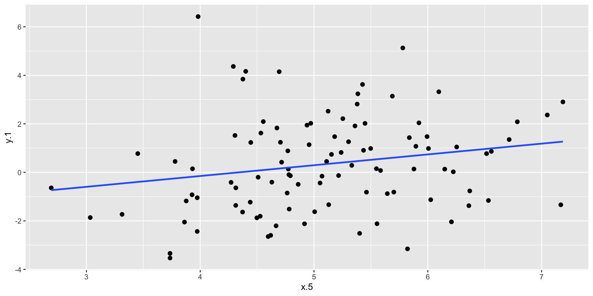
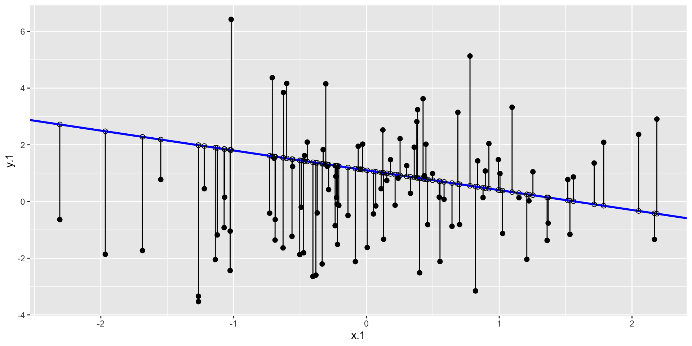
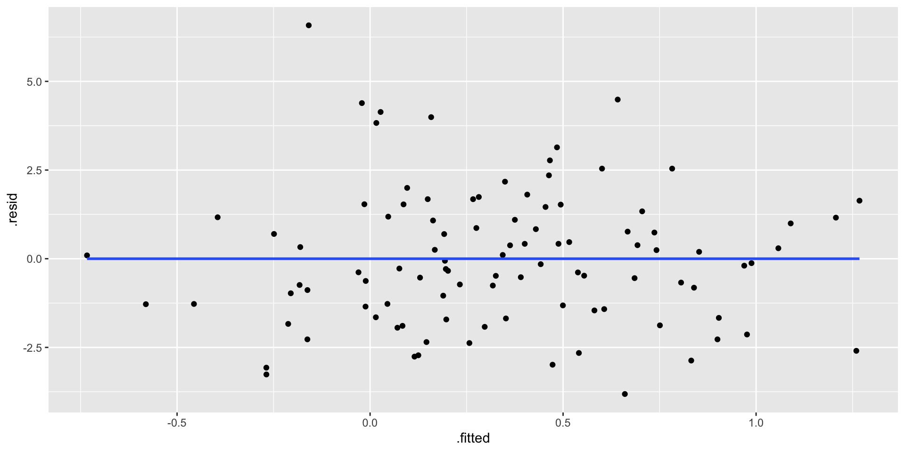
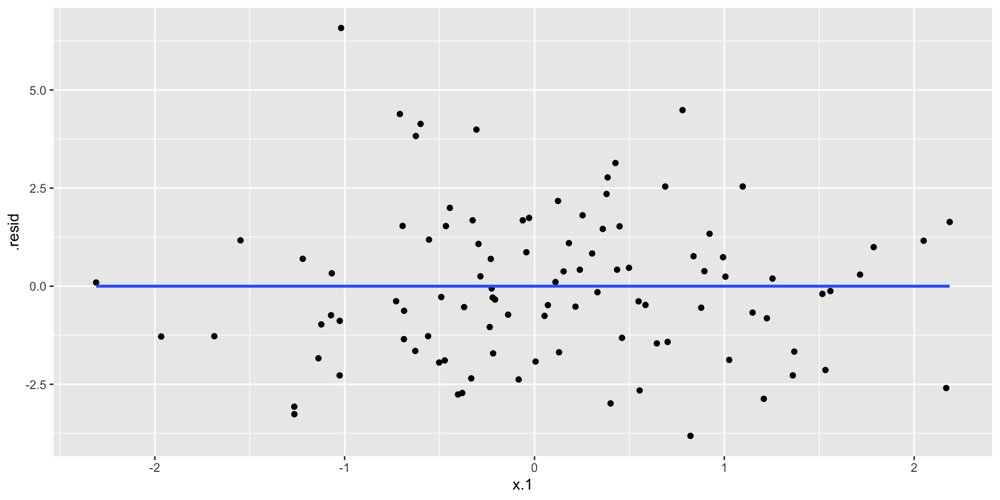
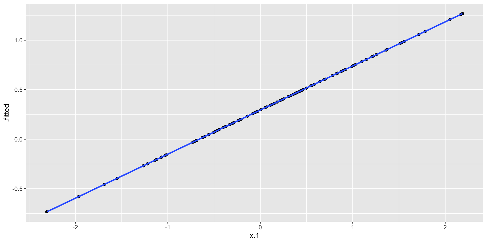

Thinking in terms of models
Our DV (here forth Y) is what we are trying to understand
We hypothesize it has some relationship with your IV(s) (here forth Xs), with what is left over described as error (E)
\(y = b_0 + b_{1}X + e\)
How can we visualize data to make sense of it?
Code
library (broom)library (tidyverse)set.seed (123 ).1 <- rnorm (100 , 0 , 1 ).1 <- rnorm (100 , 0 , 2 ).1 <- .5 + .55 * x.1 + e.1 .1 <- data.frame (x.1 ,y.1 ).1 <- lm (y.1 ~ x.1 , data = d.1 )<- augment (m.1 ).1
x.1 y.1
1 -0.560475647 -1.22907473
2 -0.230177489 0.88716980
3 1.558708314 0.86390582
4 0.070508391 -0.15630558
5 0.129287735 -1.33212888
6 1.715064987 1.35323029
7 0.460916206 -0.81630503
8 -1.265061235 -3.53166755
9 -0.686852852 -0.63822211
10 -0.445661970 2.09287913
11 1.224081797 0.02255106
12 0.359813827 1.91382625
13 0.400771451 -2.51534112
14 0.110682716 0.44975156
15 -0.555841135 1.23310178
16 1.786913137 2.08510895
17 0.497850478 0.98517015
18 -1.966617157 -1.86305145
19 0.701355902 -0.81366295
20 -0.472791408 -1.80829286
21 -1.067823706 0.14799016
22 -0.217974915 -1.51483543
23 -1.026004448 -1.04541733
24 -0.728891229 -0.41307456
25 -0.625039268 3.84395241
26 -1.686693311 -1.73158112
27 0.837787044 1.43155602
28 0.153373118 0.74027691
29 -1.138136937 -2.04968858
30 1.253814921 1.04698203
31 0.426464221 3.62365704
32 -0.295071483 1.24071879
33 0.895125661 1.07478496
34 0.878133488 0.13797975
35 0.821581082 -3.15462485
36 0.688640254 3.14142657
37 0.553917654 -2.11662543
38 -0.061911711 1.94584358
39 -0.305962664 4.14992767
40 -0.380471001 -2.59704537
41 -0.694706979 1.52147983
42 -0.207917278 -0.13874948
43 -1.265396352 -3.34025631
44 2.168955965 -1.33640953
45 1.207961998 -2.03869325
46 -1.123108583 -1.17952277
47 -0.402884835 -2.64509783
48 -0.466655354 1.61917310
49 0.779965118 5.12919870
50 -0.083369066 -2.11991394
51 0.253318514 2.21480288
52 -0.028546755 2.02238377
53 -0.042870457 1.14082641
54 1.368602284 -0.76402196
55 -0.225770986 0.13692074
56 1.516470604 0.77326816
57 -1.548752804 0.77416502
58 0.584613750 0.07666005
59 0.123854244 2.52206661
60 0.215941569 -0.13039385
61 0.379639483 2.81422465
62 -0.502323453 -1.87463191
63 -0.333207384 -2.20357455
64 -1.018575383 6.42186341
65 -1.071791226 -0.92320035
66 0.303528641 1.26339594
67 0.448209779 2.01965473
68 0.053004227 -0.43840893
69 0.922267468 2.04097120
70 2.050084686 2.36547563
71 -0.491031166 -0.20082816
72 -2.309168876 -0.63945681
73 1.005738524 0.98502168
74 -0.709200763 4.36684338
75 -0.688008616 -1.36107693
76 1.025571370 -1.12792828
77 -0.284773007 0.41895164
78 -1.220717712 0.44956676
79 0.181303480 1.47276387
80 -0.138891362 -0.49312091
81 0.005764186 -1.62348197
82 0.385280401 3.23827457
83 -0.370660032 -0.40316379
84 0.644376549 -0.87661862
85 -0.220486562 -0.09382675
86 0.331781964 0.28812829
87 1.096839013 3.32310204
88 0.435181491 0.90882440
89 -0.325931586 1.82884520
90 1.148807618 0.13326016
91 0.993503856 1.47531774
92 0.548396960 0.15224650
93 0.238731735 0.82046951
94 -0.627906076 -1.63607506
95 1.360652449 -1.37324422
96 -0.600259587 4.16428400
97 2.187332993 2.90445079
98 1.532610626 -1.15960688
99 -0.235700359 -0.85196703
100 -1.026420900 -2.43549166
Code
ggplot (d1.f , aes (x= x.1 , y= y.1 )) + geom_point (size = 2 ) + geom_smooth (method = lm, se = FALSE )
General linear model (GLM)
This model (equation) can be very simple as in a treatment/control experiment
It can be very complex in terms of trying to understand something like academic achievement
The majority of our models fall under the umbrella of a general(ized) linear model (often referred to as regression models)
Models imply our theory about how the data are generated (ie how the world works)
Parts of the model
\[Y_i = b_{0} + b_{1}X_i + e_i\]
Each individual has a unique Y value an X value and a residual/error term
The model only has a single \(b_{0}\) and \(b_{1}\) term. These are the regression parameters. \(b_{0}\) is the intercept and \(b_{1}\) quantifies the relationship between your model of the world and the DV.
in R
Name regression object
Use linear model function, lm
Variable for your DV/Y
~ is interpretted as regressed on
Variable for your IV/X
What do the estimates tell us?
\[Y_i = b_{0} + b_{1}X_i + e_i\]
(Intercept) x.1
0.2943939 0.4450568
How to interpret regression estimates
The entire class will go over different ways to interpret these estimates/parameters/coefficients
Intercept (b0) signifies the level of Y when your model IVs (Xs) are zero
Regression (b1) signifies the difference for a one unit change in your X
Regression coefficient
“For a one unit change in X, there is a b1 predicted change in Y.”
\[\large b_{1} = \frac{cov_{XY}}{s_{x}^{2}} = r_{xy} \frac{s_{y}}{s_{x}}\] \[\large r_{xy} = \frac{s_{xy}}{s_xs_y}\]
x.1 y.1
x.1 1.0000000 0.2058176
y.1 0.2058176 1.0000000
library (report)report_sample (d.1 )
# Descriptive Statistics
Variable | Summary
---------------------------
Mean x.1 (SD) | 0.09 (0.91)
Mean y.1 (SD) | 0.33 (1.97)
pop quiz
If I flipped the x and y variables, would I get the same regression coefficient?
pop quiz #2
What would the regression coefficient be if I standardized (z-scored) the variables?
.2 <- d.1 |> mutate (x.z = (x.1 - mean (x.1 ))/ sd (x.1 )) |> mutate (y.z = (y.1 - mean (y.1 ))/ sd (y.1 )).2
x.1 y.1 x.z y.z
1 -0.560475647 -1.22907473 -0.71304802 -0.79220677
2 -0.230177489 0.88716980 -0.35120270 0.27992890
3 1.558708314 0.86390582 1.60854170 0.26814286
4 0.070508391 -0.15630558 -0.02179795 -0.24871851
5 0.129287735 -1.33212888 0.04259548 -0.84441625
6 1.715064987 1.35323029 1.77983218 0.51604532
7 0.460916206 -0.81630503 0.40589817 -0.58308863
8 -1.265061235 -3.53166755 -1.48492941 -1.95875055
9 -0.686852852 -0.63822211 -0.85149566 -0.49286794
10 -0.445661970 2.09287913 -0.58726835 0.89076756
11 1.224081797 0.02255106 1.24195461 -0.15810583
12 0.359813827 1.91382625 0.29513939 0.80005546
13 0.400771451 -2.51534112 0.34000892 -1.44385740
14 0.110682716 0.44975156 0.02221347 0.05832327
15 -0.555841135 1.23310178 -0.70797086 0.45518559
16 1.786913137 2.08510895 1.85854263 0.88683102
17 0.497850478 0.98517015 0.44636008 0.32957801
18 -1.966617157 -1.86305145 -2.25349176 -1.11339321
19 0.701355902 -0.81366295 0.66930255 -0.58175009
20 -0.472791408 -1.80829286 -0.61698896 -1.08565131
21 -1.067823706 0.14799016 -1.26885349 -0.09455564
22 -0.217974915 -1.51483543 -0.33783464 -0.93697938
23 -1.026004448 -1.04541733 -1.22304003 -0.69916192
24 -0.728891229 -0.41307456 -0.89754917 -0.37880327
25 -0.625039268 3.84395241 -0.78377819 1.77789950
26 -1.686693311 -1.73158112 -1.94683206 -1.04678748
27 0.837787044 1.43155602 0.81876439 0.55572684
28 0.153373118 0.74027691 0.06898128 0.20550976
29 -1.138136937 -2.04968858 -1.34588242 -1.20794766
30 1.253814921 1.04698203 1.27452758 0.36089326
31 0.426464221 3.62365704 0.36815564 1.66629306
32 -0.295071483 1.24071879 -0.42229479 0.45904453
33 0.895125661 1.07478496 0.88157948 0.37497883
34 0.878133488 0.13797975 0.86296437 -0.09962713
35 0.821581082 -3.15462485 0.80101058 -1.76773249
36 0.688640254 3.14142657 0.65537241 1.42198458
37 0.553917654 -2.11662543 0.50778230 -1.24185933
38 -0.061911711 1.94584358 -0.16686565 0.81627614
39 -0.305962664 4.14992767 -0.43422620 1.93291325
40 -0.380471001 -2.59704537 -0.51585092 -1.48525055
41 -0.694706979 1.52147983 -0.86009994 0.60128420
42 -0.207917278 -0.13874948 -0.32681639 -0.23982420
43 -1.265396352 -3.34025631 -1.48529653 -1.86177744
44 2.168955965 -1.33640953 2.27707482 -0.84658492
45 1.207961998 -2.03869325 1.22429519 -1.20237718
46 -1.123108583 -1.17952277 -1.32941869 -0.76710266
47 -0.402884835 -2.64509783 -0.54040552 -1.50959498
48 -0.466655354 1.61917310 -0.61026684 0.65077775
49 0.779965118 5.12919870 0.75541982 2.42903332
50 -0.083369066 -2.11991394 -0.19037243 -1.24352536
51 0.253318514 2.21480288 0.17847258 0.95253679
52 -0.028546755 2.02238377 -0.13031397 0.85505307
53 -0.042870457 1.14082641 -0.14600575 0.40843687
54 1.368602284 -0.76402196 1.40027842 -0.55660089
55 -0.225770986 0.13692074 -0.34637532 -0.10016365
56 1.516470604 0.77326816 1.56226982 0.22222384
57 -1.548752804 0.77416502 -1.79571669 0.22267821
58 0.584613750 0.07666005 0.54141021 -0.13069303
59 0.123854244 2.52206661 0.03664303 1.10820330
60 0.215941569 -0.13039385 0.13752572 -0.23559106
61 0.379639483 2.81422465 0.31685861 1.25621694
62 -0.502323453 -1.87463191 -0.64934164 -1.11926013
63 -0.333207384 -2.20357455 -0.46407310 -1.28590965
64 -1.018575383 6.42186341 -1.21490140 3.08392548
65 -1.071791226 -0.92320035 -1.27319995 -0.63724413
66 0.303528641 1.26339594 0.23347834 0.47053327
67 0.448209779 2.01965473 0.39197814 0.85367048
68 0.053004227 -0.43840893 -0.04097396 -0.39163822
69 0.922267468 2.04097120 0.91131364 0.86446987
70 2.050084686 2.36547563 2.14685001 1.02887090
71 -0.491031166 -0.20082816 -0.63697081 -0.27127461
72 -2.309168876 -0.63945681 -2.62876100 -0.49349346
73 1.005738524 0.98502168 1.00275711 0.32950280
74 -0.709200763 4.36684338 -0.87597805 2.04280748
75 -0.688008616 -1.36107693 -0.85276181 -0.85908197
76 1.025571370 -1.12792828 1.02448422 -0.74096377
77 -0.284773007 0.41895164 -0.41101270 0.04271936
78 -1.220717712 0.44956676 -1.43635058 0.05822965
79 0.181303480 1.47276387 0.09957931 0.57660364
80 -0.138891362 -0.49312091 -0.25119772 -0.41935650
81 0.005764186 -1.62348197 -0.09272595 -0.99202208
82 0.385280401 3.23827457 0.32303830 1.47104989
83 -0.370660032 -0.40316379 -0.50510289 -0.37378226
84 0.644376549 -0.87661862 0.60688103 -0.61364481
85 -0.220486562 -0.09382675 -0.34058618 -0.21706536
86 0.331781964 0.28812829 0.26443017 -0.02355861
87 1.096839013 3.32310204 1.10255872 1.51402533
88 0.435181491 0.90882440 0.37770550 0.29089959
89 -0.325931586 1.82884520 -0.45610238 0.75700221
90 1.148807618 0.13326016 1.15949090 -0.10201818
91 0.993503856 1.47531774 0.98935390 0.57789748
92 0.548396960 0.15224650 0.50173432 -0.09239928
93 0.238731735 0.82046951 0.16249260 0.24613708
94 -0.627906076 -1.63607506 -0.78691881 -0.99840202
95 1.360652449 -1.37324422 1.39156928 -0.86524618
96 -0.600259587 4.16428400 -0.75663177 1.94018647
97 2.187332993 2.90445079 2.29720706 1.30192748
98 1.532610626 -1.15960688 1.57995139 -0.75701284
99 -0.235700359 -0.85196703 -0.35725306 -0.60115578
100 -1.026420900 -2.43549166 -1.22349625 -1.40340392
library (easystats).2 <- lm (y.z ~ x.z, data = d.2 )model_parameters (m.2 )
Parameter | Coefficient | SE | 95% CI | t(98) | p
---------------------------------------------------------------------
(Intercept) | -5.78e-17 | 0.10 | [-0.20, 0.20] | -5.88e-16 | > .999
x z | 0.21 | 0.10 | [ 0.01, 0.40] | 2.08 | 0.040
Intercept
The intercept serves to adjust for differences in means between x and y.
What is the intercept in a standardized regression?
What happens to the intercept if I add 5 to x?
.3 <- d.1 |> mutate (x.5 = (x.1 + 5 ) ).3
x.1 y.1 x.5
1 -0.560475647 -1.22907473 4.439524
2 -0.230177489 0.88716980 4.769823
3 1.558708314 0.86390582 6.558708
4 0.070508391 -0.15630558 5.070508
5 0.129287735 -1.33212888 5.129288
6 1.715064987 1.35323029 6.715065
7 0.460916206 -0.81630503 5.460916
8 -1.265061235 -3.53166755 3.734939
9 -0.686852852 -0.63822211 4.313147
10 -0.445661970 2.09287913 4.554338
11 1.224081797 0.02255106 6.224082
12 0.359813827 1.91382625 5.359814
13 0.400771451 -2.51534112 5.400771
14 0.110682716 0.44975156 5.110683
15 -0.555841135 1.23310178 4.444159
16 1.786913137 2.08510895 6.786913
17 0.497850478 0.98517015 5.497850
18 -1.966617157 -1.86305145 3.033383
19 0.701355902 -0.81366295 5.701356
20 -0.472791408 -1.80829286 4.527209
21 -1.067823706 0.14799016 3.932176
22 -0.217974915 -1.51483543 4.782025
23 -1.026004448 -1.04541733 3.973996
24 -0.728891229 -0.41307456 4.271109
25 -0.625039268 3.84395241 4.374961
26 -1.686693311 -1.73158112 3.313307
27 0.837787044 1.43155602 5.837787
28 0.153373118 0.74027691 5.153373
29 -1.138136937 -2.04968858 3.861863
30 1.253814921 1.04698203 6.253815
31 0.426464221 3.62365704 5.426464
32 -0.295071483 1.24071879 4.704929
33 0.895125661 1.07478496 5.895126
34 0.878133488 0.13797975 5.878133
35 0.821581082 -3.15462485 5.821581
36 0.688640254 3.14142657 5.688640
37 0.553917654 -2.11662543 5.553918
38 -0.061911711 1.94584358 4.938088
39 -0.305962664 4.14992767 4.694037
40 -0.380471001 -2.59704537 4.619529
41 -0.694706979 1.52147983 4.305293
42 -0.207917278 -0.13874948 4.792083
43 -1.265396352 -3.34025631 3.734604
44 2.168955965 -1.33640953 7.168956
45 1.207961998 -2.03869325 6.207962
46 -1.123108583 -1.17952277 3.876891
47 -0.402884835 -2.64509783 4.597115
48 -0.466655354 1.61917310 4.533345
49 0.779965118 5.12919870 5.779965
50 -0.083369066 -2.11991394 4.916631
51 0.253318514 2.21480288 5.253319
52 -0.028546755 2.02238377 4.971453
53 -0.042870457 1.14082641 4.957130
54 1.368602284 -0.76402196 6.368602
55 -0.225770986 0.13692074 4.774229
56 1.516470604 0.77326816 6.516471
57 -1.548752804 0.77416502 3.451247
58 0.584613750 0.07666005 5.584614
59 0.123854244 2.52206661 5.123854
60 0.215941569 -0.13039385 5.215942
61 0.379639483 2.81422465 5.379639
62 -0.502323453 -1.87463191 4.497677
63 -0.333207384 -2.20357455 4.666793
64 -1.018575383 6.42186341 3.981425
65 -1.071791226 -0.92320035 3.928209
66 0.303528641 1.26339594 5.303529
67 0.448209779 2.01965473 5.448210
68 0.053004227 -0.43840893 5.053004
69 0.922267468 2.04097120 5.922267
70 2.050084686 2.36547563 7.050085
71 -0.491031166 -0.20082816 4.508969
72 -2.309168876 -0.63945681 2.690831
73 1.005738524 0.98502168 6.005739
74 -0.709200763 4.36684338 4.290799
75 -0.688008616 -1.36107693 4.311991
76 1.025571370 -1.12792828 6.025571
77 -0.284773007 0.41895164 4.715227
78 -1.220717712 0.44956676 3.779282
79 0.181303480 1.47276387 5.181303
80 -0.138891362 -0.49312091 4.861109
81 0.005764186 -1.62348197 5.005764
82 0.385280401 3.23827457 5.385280
83 -0.370660032 -0.40316379 4.629340
84 0.644376549 -0.87661862 5.644377
85 -0.220486562 -0.09382675 4.779513
86 0.331781964 0.28812829 5.331782
87 1.096839013 3.32310204 6.096839
88 0.435181491 0.90882440 5.435181
89 -0.325931586 1.82884520 4.674068
90 1.148807618 0.13326016 6.148808
91 0.993503856 1.47531774 5.993504
92 0.548396960 0.15224650 5.548397
93 0.238731735 0.82046951 5.238732
94 -0.627906076 -1.63607506 4.372094
95 1.360652449 -1.37324422 6.360652
96 -0.600259587 4.16428400 4.399740
97 2.187332993 2.90445079 7.187333
98 1.532610626 -1.15960688 6.532611
99 -0.235700359 -0.85196703 4.764300
100 -1.026420900 -2.43549166 3.973579
.3 <- lm (y.1 ~ x.5 , data = d.3 )model_parameters (m.3 )
Parameter | Coefficient | SE | 95% CI | t(98) | p
----------------------------------------------------------------
(Intercept) | -1.93 | 1.11 | [-4.12, 0.26] | -1.75 | 0.084
x 5 | 0.45 | 0.21 | [ 0.02, 0.87] | 2.08 | 0.040
Code
ggplot (d.3 , aes (x= x.5 , y= y.1 )) + geom_point (size = 2 ) + geom_smooth (method = lm, se = FALSE )

Code
ggplot (d1.f , aes (x= x.1 , y= y.1 )) + geom_point (size = 2 ) + geom_smooth (method = lm, se = FALSE )
Parameter | Coefficient | SE | 95% CI | t(98) | p
----------------------------------------------------------------
(Intercept) | 0.29 | 0.20 | [-0.09, 0.68] | 1.51 | 0.135
x 1 | 0.45 | 0.21 | [ 0.02, 0.87] | 2.08 | 0.040
Centroid
The mean of X and the mean of Y must always pass through the regression line
We will revisit this later in the semester as we discuss evaluating our models. The mean will be our baseline “guess” for using X to predict Y.
Predictions
The regression line is made up of predictions
We will often call them \(\hat{Y}\)
Code
ggplot (d1.f , aes (x= x.1 , y= y.1 )) + geom_point (size = 2 ) + geom_smooth (method = lm, se = FALSE )
Predictions
\[\hat{Y_i} = b_{0} + b_{1}X_i \] - People who have the same IV, get the same DV. No error in our equation.
Predictions
\(\hat{Y_i}\) are also known as fitted values
# A tibble: 100 × 8
y.1 x.1 .fitted .resid .hat .sigma .cooksd .std.resid
<dbl> <dbl> <dbl> <dbl> <dbl> <dbl> <dbl> <dbl>
1 -1.23 -0.560 0.0450 -1.27 0.0151 1.95 0.00336 -0.661
2 0.887 -0.230 0.192 0.695 0.0112 1.95 0.000738 0.360
3 0.864 1.56 0.988 -0.124 0.0361 1.95 0.0000796 -0.0652
4 -0.156 0.0705 0.326 -0.482 0.0100 1.95 0.000315 -0.250
5 -1.33 0.129 0.352 -1.68 0.0100 1.94 0.00385 -0.872
6 1.35 1.72 1.06 0.296 0.0420 1.95 0.000530 0.156
7 -0.816 0.461 0.500 -1.32 0.0117 1.95 0.00274 -0.682
8 -3.53 -1.27 -0.269 -3.26 0.0323 1.92 0.0487 -1.71
9 -0.638 -0.687 -0.0113 -0.627 0.0173 1.95 0.000935 -0.326
10 2.09 -0.446 0.0960 2.00 0.0135 1.94 0.00733 1.04
# ℹ 90 more rows
Residuals
The residuals can be thought of as what is left over in Y that is not explained by our model. ie difference between actual and predicted
\[Y_i = b_{0} + b_{1}X_i + e_i\]
\[\hat{Y_i} = b_{0} + b_{1}X_i\] \[{Y_i} - \hat{Y_i} = e_i \]
Residuals
ggplot (d1.f , aes (x= x.1 , y= y.1 )) + geom_point (size = 2 ) + geom_smooth (method = lm, se = FALSE )
Thinking ahead: do we want large or small residuals?

Residuals
Association between \(\hat{Y_i}\) and e?
|> ggplot (aes (x = .fitted, y = .resid)) + geom_point () + geom_smooth (se = F, method = "lm" )

|> ggplot (aes (x = x.1 , y = .resid)) + geom_point () + geom_smooth (se = F, method = "lm" )

x and \(\hat{Y_i}\) represent the same information. We use x to create \(\hat{Y_i}\)
|> ggplot (aes (x = x.1 , y = .fitted)) + geom_point () + geom_smooth (se = F, method = "lm" )
